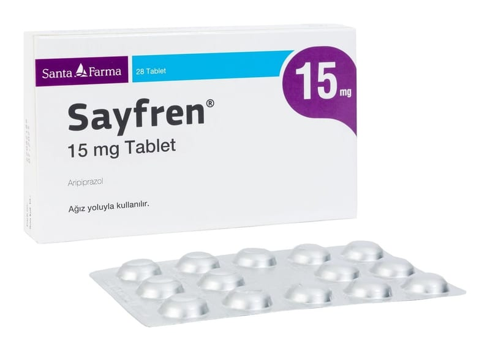

Sayfren 15 mg Tablet, 28 Adet

Ne için kullanılır
KT · Bölüm 1SAYFREN®antipsikotikler olarak adlandırılan bir ilaç grubuna dahildir.
SAYFREN®, açık sarı renkte, bir yüzü çentikli, yuvarlak tablet şeklindedir ve 28 ve 56 tabletlik formu ile Alu/Alu folyo blister ambalajlarda kullanıma sunulmaktadır.
SAYFREN®, yetişkin ve ergenlerde (13-17 yaş), olmayan şeyleri duyma, görme veya hissetme, şüphecilik, yanlış düşünceler, tutarsız konuşmalar, davranışlar ve duygusal durumda durgunluk gibi belirtiler ile karakterize bir hastalığın tedavisi için kullanılır. Bu durumdaki hastalar aynı zamanda ruhsal çökkünlük içinde olabilir veya kendilerini suçlu, endişeli ya da gergin hissedebilirler.
SAYFREN®, olağan dışı ve sürekli, taşkın ya da sinirli bir dönemin olması, aşırı derecede enerjinin olması, her zamankinden daha az uykuya ihtiyaç duyulması, düşünce içeriğinde hızlanma ile birlikte ve bazen aşırı derecede tepkisel bir şekilde çok hızlı konuşma durumundaki yetişkinlerin tedavisinde ve bu durumun tekrarlamasının engellenmesinde kullanılır.
SAYFREN®antidepresan tedaviye dirençli majör depresyon hastalarında antidepresan tedaviyi güçlendirmek için ekleme tedavisi olarak endikedir. Bu ilacı kullanmaya başlamadan önce bu KULLANMA TALİMATINI dikkatlice okuyunuz, çünkü sizin için önemli bilgiler içermektedir. Bu kullanma talimatını saklayınız. Daha sonra tekrar okumaya ihtiyaç duyabilirsiniz. Eğer ilave sorularınız olursa lütfen, doktorunuza veya eczacınıza danışınız. Bu ilaç kişisel olarak sizin için reçete edilmiştir, başkalarına vermeyiniz. Bu ilacın kullanımı sırasında, doktora veya hastaneye gittiğinizde doktorunuza bu ilacı kullandığınızı söyleyiniz. Bu talimatta yazılanlara aynen uyunuz. İlaç hakkında size önerilen dozun dışında yüksek veya düşük doz kullanmayınız.
SAYFREN®, 6 ila 17 yaşındaki çocuklarda ve ergenlerde otistik bozukluk ile ilişkilendirilen irritabilite belirtilerinin (başkalarına karşı agresif davranış, kasıtlı olarak kendine zarar verme girişimleri, öfke nöbetleri, ruh halinin hızla değişmesi) tedavisinde kullanılır.